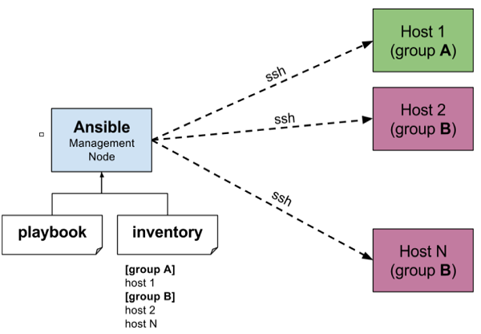

Ansible & OpenHPC
About me
- Lars Melwyn
- HPC officer @ DTU AIT RIT

- HPC cluster builder
- Umeå University, Sweden
- NORDITA, Denmark
- ESS DMSC, Denmark
- Herlev hospital
- DTU RIT, Campus Risø
currently ...
- DTU AIT RIT, hosting facilities
- two locations, server room + container(s)
- Jess, 320 HP/Intel nodes, 6400 cores
- Gorm, 80 Dell/Intel nodes, 1000 cores
- Mimers, 13 lustre server 1+ PB
- Ceph, 12 ceph servers, 1+ PB
need more ...
- DTU AIT + DTU Wind Energy + DTU Mechanical Engineering
- 20 MDKK tender
- ATEA/DELL solution
AIT HPC tender
| Type | Count | Model | Specs |
|---|---|---|---|
| Compute 1 | 490 | Dell R7425 | 2 x EPYC 7351/16C |
| 16x8GB RAM, 2x10G | |||
| Compute 2 | 32 | Dell R7425 | 2 x EPYC 7351/16C |
| 16x16GB RAM, 2x10G | |||
| Login | 2 | Dell R7425 | 2 x EPYC 7351/16C |
| 16x8GB RAM, 2x10G | |||
| 2 x P4000 NVIDIA | |||
| Infiniband | 49 | Mellanox S78xx switches | 36 x 100G |
| Ethernet | 15 | Dell Networking S4048-ON | 48 x 10G |
| Ethernet | 15 | Dell Networking S3048 | 48 x 1G |
| Container | 1 | Data center | 30 racks |
Descriptive language for admin tasks
- Installing packages
- Generating conf files
- Managing file system permissions
- Setting environment variables
- Restarting daemons/services
- Updating code releases
- Managing firewall rules
- .... and much more
4 day course ... in 10 min
- Course introduction
- Introduce Ansible
- Deploy Ansible
- Implement playbooks
- Manage variables and inclusions
- Implement task control
- Implement Jinja2 templates
- Implement roles
- Configure complex playbooks
- Implement Ansible Vault
- Troubleshoot Ansible
- Implement Ansible Tower
- Implement Ansible in a DevOps environment
- Comprehensive review
Ansible design goals
- Minimal in nature. Only OpenSSH and a bit of Python and YAML
- Highly reliable for consistent and reproducible environments
- Secure and agentless
- OS / distribution agnostic
- Idempotent, T(T(x))=T(x), when carefully programmed
- Shallow learning curve, 10 minutes and you are good to go
- Easy to use
- Descriptive YAML (state)
- Jinja templates (simple variable replacement + much more)
- Flexible setup
Concepts

- Inventory
- devices
- device group
- Task
- single task = raw command
- multiple tasks = playbook
- organized tasks = role
- Modules
- task / state functions
- variables
Simple playbook task
Descriptive, system state oriented, module and jinja
Modules
- list of modules
Playbook language
Roles
Role based playbook
- ansible-playbook -i inventory/all playbook/melwyn.repos.yml --user=root
- --limit host1
tasks/redhat.yml
defaults/main.yml
Ansible-doc
galaxy.ansible.com
more commands
Final remarks
- Ansible is workflow automation for
- provisioning
- deployment
- management
- Turn bare metal into software defined!
- service-not-function oriented
- alternativ to virtualization vmware/openstack
- Redhat owned project
- good documentation
- large community, mailling lists
- ansible tower web based application
- Outlook
- can be used for much more than sysadm
- gitlab ci, gitlab-runner
Standard HPC cluster design
General HPC software stack

- pxe/kickstart & do it yourself -> done
What is OpenHPC?
- Building blocks for open (source) HPC
Pick & Choose and Mix & Match
- Provisioning
- configuration management
- Deployment system
- warewulf
- xCat
- losf + cobbler
- Resource management
- slurm
- pbspro
- Software packages
- ohpc rpm
- easybuild
- spack
Why OpenHPC
- Standard
- standard interfaces (lmod, ohpc, easybuild, spack)
- extensive documentation
- active community
- security oriented
- build server framework
- software validation
- CentOS HPC SIG
- Best/Good practice
- power management
- system performance monitoring
- application libraries
- dev tools
- parallel file systems
- system utilization monitoring
OpenHPC Howto
Simple scripted deployment with warewulf
Reference recipe.sh
#!/bin/bash
# -----------------------------------------------------------------------------------------
# Example Installation Script Template
#
# This convenience script encapsulates command-line instructions highlighted in
# the OpenHPC Install Guide that can be used as a starting point to perform a local
# cluster install beginning with bare-metal. Necessary inputs that describe local
# hardware characteristics, desired network settings, and other customizations
# are controlled via a companion input file that is used to initialize variables
# within this script.
#
# Please see the OpenHPC Install Guide for more information regarding the
# procedure. Note that the section numbering included in this script refers to
# corresponding sections from the install guide.
# -----------------------------------------------------------------------------------------
inputFile=${OHPC_INPUT_LOCAL:-/opt/ohpc/pub/doc/recipes/vanilla/input.local}
if [ ! -e ${inputFile} ];then
echo "Error: Unable to access local input file -> ${inputFile}"
exit 1
else
. ${inputFile} || { echo "Error sourcing ${inputFile}"; exit 1; }
fi
# ---------------------------- Begin OpenHPC Recipe ---------------------------------------
# Commands below are extracted from an OpenHPC install guide recipe and are intended for
# execution on the master SMS host.
# -----------------------------------------------------------------------------------------
# Verify OpenHPC repository has been enabled before proceeding
yum repolist | grep -q OpenHPC
if [ $? -ne 0 ];then
echo "Error: OpenHPC repository must be enabled locally"
exit 1
fi
# ------------------------------------------------------------
# Add baseline OpenHPC and provisioning services (Section 3.3)
# ------------------------------------------------------------
yum -y groupinstall ohpc-base
yum -y groupinstall ohpc-warewulf
# Disable firewall
systemctl disable firewalld
systemctl stop firewalld
# Enable NTP services on SMS host
systemctl enable ntpd.service
echo "server ${ntp_server}" >> /etc/ntp.conf
systemctl restart ntpd
# -------------------------------------------------------------
# Add resource management services on master node (Section 3.4)
# -------------------------------------------------------------
yum -y groupinstall ohpc-slurm-server
useradd slurm
# ------------------------------------------------------------
# Add InfiniBand support services on master node (Section 3.5)
# ------------------------------------------------------------
yum -y groupinstall "InfiniBand Support"
yum -y install infinipath-psm
systemctl start rdma
if [[ ${enable_ipoib} -eq 1 ]];then
# Enable ib0
cp /opt/ohpc/pub/examples/network/centos/ifcfg-ib0 /etc/sysconfig/network-scripts
perl -pi -e "s/master_ipoib/${sms_ipoib}/" /etc/sysconfig/network-scripts/ifcfg-ib0
perl -pi -e "s/ipoib_netmask/${ipoib_netmask}/" /etc/sysconfig/network-scripts/ifcfg-ib0
ifup ib0
fi
# Optionally enable opensm subnet manager
if [[ ${enable_opensm} -eq 1 ]];then
yum -y install opensm
systemctl enable opensm
systemctl start opensm
fi
# -----------------------------------------------------------
# Complete basic Warewulf setup for master node (Section 3.6)
# -----------------------------------------------------------
perl -pi -e "s/device = eth1/device = ${sms_eth_internal}/" /etc/warewulf/provision.conf
perl -pi -e "s/^\s+disable\s+= yes/ disable = no/" /etc/xinetd.d/tftp
export MODFILE=/etc/httpd/conf.d/warewulf-httpd.conf
perl -pi -e "s/cgi-bin>\$/cgi-bin>\n Require all granted/" $MODFILE
perl -pi -e "s/Allow from all/Require all granted/" $MODFILE
perl -ni -e "print unless /^\s+Order allow,deny/" $MODFILE
ifconfig ${sms_eth_internal} ${sms_ip} netmask ${internal_netmask} up
systemctl restart xinetd
systemctl enable mariadb.service
systemctl restart mariadb
systemctl enable httpd.service
systemctl restart httpd
if [ ! -z ${BOS_MIRROR+x} ]; then
perl -pi -e "s#^YUM_MIRROR=(\S+)#YUM_MIRROR=${BOS_MIRROR}#" /usr/libexec/warewulf/wwmkchroot/centos-7.tmpl
fi
# -------------------------------------------------
# Create compute image for Warewulf (Section 3.7.1)
# -------------------------------------------------
export CHROOT=/opt/ohpc/admin/images/centos7.2
wwmkchroot centos-7 $CHROOT
# -------------------------------------------------------
# Add OpenHPC components to compute image (Section 3.7.2)
# -------------------------------------------------------
cp -p /etc/resolv.conf $CHROOT/etc/resolv.conf
# Add OpenHPC components to compute instance
yum -y --installroot=$CHROOT groupinstall ohpc-slurm-client
yum -y --installroot=$CHROOT groupinstall "InfiniBand Support"
yum -y --installroot=$CHROOT install infinipath-psm
chroot $CHROOT systemctl enable rdma
yum -y --installroot=$CHROOT install ntp
yum -y --installroot=$CHROOT install kernel
yum -y --installroot=$CHROOT install lmod-ohpc
# ----------------------------------------------
# Customize system configuration (Section 3.7.3)
# ----------------------------------------------
wwinit ssh_keys
cat ~/.ssh/cluster.pub >> $CHROOT/root/.ssh/authorized_keys
echo "${sms_ip}:/home /home nfs nfsvers=3,rsize=1024,wsize=1024,cto 0 0" >> $CHROOT/etc/fstab
echo "${sms_ip}:/opt/ohpc/pub /opt/ohpc/pub nfs nfsvers=3 0 0" >> $CHROOT/etc/fstab
perl -pi -e "s/ControlMachine=\S+/ControlMachine=${sms_name}/" /etc/slurm/slurm.conf
echo "/home *(rw,no_subtree_check,fsid=10,no_root_squash)" >> /etc/exports
echo "/opt/ohpc/pub *(ro,no_subtree_check,fsid=11)" >> /etc/exports
exportfs -a
systemctl restart nfs
systemctl enable nfs-server
chroot $CHROOT systemctl enable ntpd
echo "server ${sms_ip}" >> $CHROOT/etc/ntp.conf
# Update basic slurm configuration if additional computes defined
if [ ${num_computes} -gt 4 ];then
perl -pi -e "s/^NodeName=(\S+)/NodeName=c[1-${num_computes}]/" /etc/slurm/slurm.conf
perl -pi -e "s/^PartitionName=normal Nodes=(\S+)/PartitionName=normal Nodes=c[1-${num_computes}]/" /etc/slurm/slurm.conf
perl -pi -e "s/^NodeName=(\S+)/NodeName=c[1-${num_computes}]/" $CHROOT/etc/slurm/slurm.conf
perl -pi -e "s/^PartitionName=normal Nodes=(\S+)/PartitionName=normal Nodes=c[1-${num_computes}]/" $CHROOT/etc/slurm/slurm.conf
fi
# -----------------------------------------
# Additional customizations (Section 3.7.4)
# -----------------------------------------
perl -pi -e 's/# End of file/\* soft memlock unlimited\n$&/s' /etc/security/limits.conf
perl -pi -e 's/# End of file/\* hard memlock unlimited\n$&/s' /etc/security/limits.conf
perl -pi -e 's/# End of file/\* soft memlock unlimited\n$&/s' $CHROOT/etc/security/limits.conf
perl -pi -e 's/# End of file/\* hard memlock unlimited\n$&/s' $CHROOT/etc/security/limits.conf
# Enable slurm pam module
echo "account required pam_slurm.so" >> $CHROOT/etc/pam.d/sshd
# Enable Optional packages
if [[ ${enable_lustre_client} -eq 1 ]];then
# Install Lustre client on master
yum -y install lustre-client-ohpc lustre-client-ohpc-modules
# Enable lustre in WW compute image
yum -y --installroot=$CHROOT install lustre-client-ohpc lustre-client-ohpc-modules
mkdir $CHROOT/mnt/lustre
echo "${mgs_fs_name} /mnt/lustre lustre defaults,_netdev,localflock 0 0" >> $CHROOT/etc/fstab
# Enable o2ib for Lustre
echo "options lnet networks=o2ib(ib0)" >> /etc/modprobe.d/lustre.conf
echo "options lnet networks=o2ib(ib0)" >> $CHROOT/etc/modprobe.d/lustre.conf
# mount Lustre client on master
mkdir /mnt/lustre
mount -t lustre -o localflock ${mgs_fs_name} /mnt/lustre
fi
if [[ ${enable_nagios} -eq 1 ]];then
# Install Nagios on master and vnfs image
yum -y groupinstall ohpc-nagios
yum -y --installroot=$CHROOT groupinstall ohpc-nagios
chroot $CHROOT systemctl enable nrpe
perl -pi -e "s/^allowed_hosts=/# allowed_hosts=/" $CHROOT/etc/nagios/nrpe.cfg
echo "nrpe 5666/tcp # NRPE" >> $CHROOT/etc/services
echo "nrpe : ${sms_ip} : ALLOW" >> $CHROOT/etc/hosts.allow
echo "nrpe : ALL : DENY" >> $CHROOT/etc/hosts.allow
chroot $CHROOT /usr/sbin/useradd -c "NRPE user for the NRPE service" -d /var/run/nrpe -r -g nrpe -s /sbin/nologin nrpe
chroot $CHROOT /usr/sbin/groupadd -r nrpe
mv /etc/nagios/conf.d/services.cfg.example /etc/nagios/conf.d/services.cfg
mv /etc/nagios/conf.d/hosts.cfg.example /etc/nagios/conf.d/hosts.cfg
for ((i=0; i<$num_computes; i++)) ; do
perl -pi -e "s/HOSTNAME$(($i+1))/${c_name[$i]}/ || s/HOST$(($i+1))_IP/${c_ip[$i]}/" \
/etc/nagios/conf.d/hosts.cfg
done
perl -pi -e "s/ \/bin\/mail/ \/usr\/bin\/mailx/g" /etc/nagios/objects/commands.cfg
perl -pi -e "s/nagios\@localhost/root\@${sms_name}/" /etc/nagios/objects/contacts.cfg
echo command[check_ssh]=/usr/lib64/nagios/plugins/check_ssh localhost >> $CHROOT/etc/nagios/nrpe.cfg
chkconfig nagios on
systemctl start nagios
chmod u+s `which ping`
fi
if [[ ${enable_ganglia} -eq 1 ]];then
# Install Ganglia on master
yum -y groupinstall ohpc-ganglia
yum -y --installroot=$CHROOT install ganglia-gmond-ohpc
cp /opt/ohpc/pub/examples/ganglia/gmond.conf /etc/ganglia/gmond.conf
perl -pi -e "s/<sms>/${sms_name}/" /etc/ganglia/gmond.conf
cp /etc/ganglia/gmond.conf $CHROOT/etc/ganglia/gmond.conf
echo "gridname MySite" >> /etc/ganglia/gmetad.conf
systemctl enable gmond
systemctl enable gmetad
systemctl start gmond
systemctl start gmetad
chroot $CHROOT systemctl enable gmond
systemctl try-restart httpd
fi
if [[ ${enable_clustershell} -eq 1 ]];then
# Install clustershell
yum -y install clustershell-ohpc
cd /etc/clustershell/groups.d
mv local.cfg local.cfg.orig
echo "adm: ${sms_name}" > local.cfg
echo "compute: c[1-${num_computes}]" >> local.cfg
echo "all: @adm,@compute" >> local.cfg
fi
if [[ ${enable_mrsh} -eq 1 ]];then
# Install mrsh
yum -y install mrsh-ohpc mrsh-rsh-compat-ohpc
yum -y --installroot=$CHROOT install mrsh-ohpc mrsh-rsh-compat-ohpc mrsh-server-ohpc
echo "mshell 21212/tcp # mrshd" >> /etc/services
echo "mlogin 541/tcp # mrlogind" >> /etc/services
chroot $CHROOT systemctl enable xinetd
fi
if [[ ${enable_genders} -eq 1 ]];then
# Install genders
yum -y install genders-ohpc
echo -e "${sms_name}\tsms" > /etc/genders
for ((i=0; i<$num_computes; i++)) ; do
echo -e "${c_name[$i]}\tcompute,bmc=${c_bmc[$i]}"
done >> /etc/genders
fi
# Optionally, enable conman and configure
if [[ ${enable_ipmisol} -eq 1 ]];then
yum -y install conman-ohpc
for ((i=0; i<$num_computes; i++)) ; do
echo -n 'CONSOLE name="'${c_name[$i]}'" dev="ipmi:'${c_bmc[$i]}'" '
echo 'ipmiopts="'U:${bmc_username},P:${IPMI_PASSWORD:-undefined},W:solpayloadsize'"'
done >> /etc/conman.conf
systemctl enable conman
systemctl start conman
fi
# --------------------------------------------------------
# Configure rsyslog on SMS and computes (Section 3.7.4.10)
# --------------------------------------------------------
perl -pi -e "s/\\#\\\$ModLoad imudp/\\\$ModLoad imudp/" /etc/rsyslog.conf
perl -pi -e "s/\\#\\\$UDPServerRun 514/\\\$UDPServerRun 514/" /etc/rsyslog.conf
systemctl restart rsyslog
echo "*.* @${sms_ip}:514" >> $CHROOT/etc/rsyslog.conf
perl -pi -e "s/^\*\.info/\\#\*\.info/" $CHROOT/etc/rsyslog.conf
perl -pi -e "s/^authpriv/\\#authpriv/" $CHROOT/etc/rsyslog.conf
perl -pi -e "s/^mail/\\#mail/" $CHROOT/etc/rsyslog.conf
perl -pi -e "s/^cron/\\#cron/" $CHROOT/etc/rsyslog.conf
perl -pi -e "s/^uucp/\\#uucp/" $CHROOT/etc/rsyslog.conf
# ----------------------------
# Import files (Section 3.7.5)
# ----------------------------
wwsh file import /etc/passwd
wwsh file import /etc/group
wwsh file import /etc/shadow
wwsh file import /etc/slurm/slurm.conf
wwsh file import /etc/munge/munge.key
if [[ ${enable_ipoib} -eq 1 ]];then
wwsh file import /opt/ohpc/pub/examples/network/centos/ifcfg-ib0.ww
wwsh -y file set ifcfg-ib0.ww --path=/etc/sysconfig/network-scripts/ifcfg-ib0
fi
# --------------------------------------
# Assemble bootstrap image (Section 3.8)
# --------------------------------------
export WW_CONF=/etc/warewulf/bootstrap.conf
echo "drivers += updates/kernel/" >> $WW_CONF
wwbootstrap `uname -r`
# Assemble VNFS
wwvnfs -y --chroot $CHROOT
# Add hosts to cluster
echo "GATEWAYDEV=${eth_provision}" > /tmp/network.$$
wwsh -y file import /tmp/network.$$ --name network
wwsh -y file set network --path /etc/sysconfig/network --mode=0644 --uid=0
for ((i=0; i<$num_computes; i++)) ; do
wwsh -y node new ${c_name[i]} --ipaddr=${c_ip[i]} --hwaddr=${c_mac[i]} -D ${eth_provision}
done
# Add hosts to cluster (Cont.)
wwsh -y provision set "${compute_regex}" --vnfs=centos7.2 --bootstrap=`uname -r` --files=dynamic_hosts,passwd,group,shadow,slurm.conf,munge.key,network
# Optionally, add arguments to bootstrap kernel
if [[ ${enable_kargs} ]]; then
wwsh provision set "${compute_regex}" --kargs=${kargs}
fi
# Restart ganglia services to pick up hostfile changes
if [[ ${enable_ganglia} -eq 1 ]];then
systemctl restart gmond
systemctl restart gmetad
fi
# Optionally, define IPoIB network settings (required if planning to mount Lustre over IB)
if [[ ${enable_ipoib} -eq 1 ]];then
for ((i=0; i<$num_computes; i++)) ; do
wwsh -y node set ${c_name[$i]} -D ib0 --ipaddr=${c_ipoib[$i]} --netmask=${ipoib_netmask}
done
wwsh -y provision set "${compute_regex}" --fileadd=ifcfg-ib0.ww
fi
systemctl restart dhcpd
wwsh pxe update
# Optionally, enable console redirection
if [[ ${enable_ipmisol} -eq 1 ]];then
wwsh -y provision set "${compute_regex}" --kargs "${kargs} console=ttyS1,115200"
fi
# --------------------------------
# Boot compute nodes (Section 3.9)
# --------------------------------
for ((i=0; i<${num_computes}; i++)) ; do
ipmitool -E -I lanplus -H ${c_bmc[$i]} -U ${bmc_username} chassis power reset
done
# ---------------------------------------
# Install Development Tools (Section 4.1)
# ---------------------------------------
yum -y groupinstall ohpc-autotools
yum -y install valgrind-ohpc
yum -y install EasyBuild-ohpc
yum -y install spack-ohpc
yum -y install R_base-ohpc
# -------------------------------
# Install Compilers (Section 4.2)
# -------------------------------
yum -y install gnu-compilers-ohpc
# --------------------------------
# Install MPI Stacks (Section 4.3)
# --------------------------------
if [[ ${enable_mpi_defaults} -eq 1 ]];then
yum -y install openmpi-gnu-ohpc mvapich2-gnu-ohpc mpich-gnu-ohpc
elif [[ ${enable_mpi_opa} -eq 1 ]];then
yum -y install openmpi-psm2-gnu-ohpc mvapich2-psm2-gnu-ohpc
fi
# ---------------------------------------
# Install Performance Tools (Section 4.4)
# ---------------------------------------
yum -y groupinstall ohpc-perf-tools-gnu
yum -y install lmod-defaults-gnu-mvapich2-ohpc
# ---------------------------------------------------
# Install 3rd Party Libraries and Tools (Section 4.6)
# ---------------------------------------------------
yum -y groupinstall ohpc-serial-libs-gnu
yum -y groupinstall ohpc-io-libs-gnu
yum -y groupinstall ohpc-python-libs-gnu
yum -y groupinstall ohpc-runtimes-gnu
if [[ ${enable_mpi_defaults} -eq 1 ]];then
yum -y groupinstall ohpc-parallel-libs-gnu-mpich
yum -y groupinstall ohpc-parallel-libs-gnu-mvapich2
yum -y groupinstall ohpc-parallel-libs-gnu-openmpi
elif [[ ${enable_mpi_opa} -eq 1 ]];then
yum -y groupinstall ohpc-parallel-libs-gnu-mvapich2
yum -y groupinstall ohpc-parallel-libs-gnu-openmpi
fi
# -----------------------------------------------------------------------------------
# Install Optional Development Tools for use with Intel Parallel Studio (Section 4.7)
# -----------------------------------------------------------------------------------
if [[ ${enable_intel_packages} -eq 1 ]];then
yum -y install intel-compilers-devel-ohpc
yum -y install intel-mpi-devel-ohpc
if [[ ${enable_mpi_opa} -eq 1 ]];then
yum -y install openmpi-psm2-intel-ohpc mvapich2-psm2-intel-ohpc
fi
yum -y groupinstall ohpc-serial-libs-intel
yum -y groupinstall ohpc-io-libs-intel
yum -y groupinstall ohpc-perf-tools-intel
yum -y groupinstall ohpc-python-libs-intel
yum -y groupinstall ohpc-runtimes-intel
yum -y groupinstall ohpc-parallel-libs-intel-mpich
yum -y groupinstall ohpc-parallel-libs-intel-mvapich2
yum -y groupinstall ohpc-parallel-libs-intel-openmpi
yum -y groupinstall ohpc-parallel-libs-intel-impi
fi
# -------------------------------------------------------------
# Allow for optional sleep to wait for provisioning to complete
# -------------------------------------------------------------
sleep ${provision_wait}
# ------------------------------------
# Resource Manager Startup (Section 5)
# ------------------------------------
systemctl enable munge
systemctl enable slurmctld
systemctl start munge
systemctl start slurmctld
pdsh -w c[1-4] systemctl start slurmd
useradd -m test
wwsh file resync passwd shadow group
sleep 2
pdsh -w c[1-4] /warewulf/bin/wwgetfiles and input.local
# ---------------------------
# SMS (master) node settings
# ---------------------------
# Hostname for master server (SMS)
sms_name="${sms_name:-67}"
# Local (internal) IP address on SMS
sms_ip="${sms_ip:-12.23.45.67}"
# Internal ethernet interface on SMS
sms_eth_internal="${sms_eth_internal:-nic1}"
# Subnet netmask for internal cluster network
internal_netmask="${internal_netmask:-255.255.252.0}"
# Local ntp server for time synchronization
ntp_server="${ntp_server:-ntp.domain.dk}"
# BMC user credentials for use by IPMI
bmc_username="${bmc_username:-HackMeNow}"
bmc_password="${bmc_password:-CloseButNoCigar}"
# Additional time to wait for compute nodes to provision (seconds)
provision_wait="${provision_wait:-180}"
# Provisioning interface used by compute hosts (Warewulf recipe only)
eth_provision="${eth_provision:-nic1}"
# Flags for optional installation/configuration
enable_ib="${enable_ib:-0}"
enable_opa="${enable_opa:-0}"
enable_opafm="${enable_opafm:-0}"
enable_mpi_defaults="${enable_mpi_defaults:-1}"
enable_ipoib="${enable_ipoib:-0}"
enable_clustershell="${enable_clustershell:-1}"
enable_ipmisol="${enable_ipmisol:-1}"
enable_opensm="${enable_opensm:-0}"
enable_ganglia="${enable_ganglia:-1}"
enable_genders="${enable_genders:-1}"
enable_kargs="${enable_kargs:-0}"
enable_beegfs_client="${enable_beegfs_client:-0}"
enable_lustre_client="${enable_lustre_client:-0}"
enable_mrsh="${enable_mrsh:-1}"
enable_nagios="${enable_nagios:-1}"
enable_powerman="${enable_powerman:-1}"
enable_pmix="${enable_pmix:-0}"
enable_intel_packages="${enable_intel_packages:-1}"
nagios_web_password="${nagios_web_password:-CloseButNoCigar}"
update_slurm_nodeconfig="${update_slurm_nodeconfig:-0}"
slurm_node_config="${slurm_node_config:-c[1-2] Sockets=2 CoresPerSocket=10 ThreadsPerCore=1}"
# -------------------------
# compute node settings
# -------------------------
# total number of computes
num_computes="${num_computes:-2}"
# regex and starting prefix that matches defined compute hostnames
compute_regex="${compute_regex:-c*}"
compute_prefix="${compute_prefix:-c}"
# compute hostnames
c_name[0]=c1
c_name[1]=c2
# compute node IP addresses
c_ip[0]=12.34.56.79
c_ip[1]=12.34.56.80
# compute node MAC addreses for provisioning interface
c_mac[0]=de:ad:be:ef:ca:fe
c_mac[1]=de:ad:be:ef:ca:ff
# compute node BMC addresses
c_bmc[0]=22.34.56.79
c_bmc[1]=22.34.56.80
#-------------------
# Optional settings
#-------------------
# additional arguments to enable optional arguments for bootstrap kernel
kargs="${kargs:-acpi_pad.disable=1}"
# BeeGFS repository URL
beegfs_repo="${beegfs_repo:-https://www.beegfs.io/release/beegfs_6/dists/beegfs-rhel7.repo}"
# BeeGFS sysMgmtdHost
sysmgmtd_host="${sysmgmtd_host:-172.17.1.16}"
# Lustre MGS mount name
mgs_fs_name="${mgs_fs_name:-192.168.100.254@o2ib:/lustre1}"
# Subnet netmask for IPoIB network
ipoib_netmask="${ipoib_netmask:-255.255.0.0}"
# IPoIB address for SMS server
sms_ipoib="${sms_ipoib:-192.168.0.1}"
# IPoIB addresses for computes
c_ipoib[0]=192.168.1.79
c_ipoib[1]=192.168.1.80Roll with Ansible roles
- --tags and --skip-tags
Warewulf
- Warewulf is a scalable systems management suite
- easy
- open
- scalable
- .... sold
Warewulf administration
- pxe/tftp
- bootstrap
- VNFS chroot image
- stateless (in RAM + VNFS)
- stateful (on local disk)
Commands
wwsh bootstrap list
wwsh provision list
wwsh file list
wwsh node list
wwsh object list
wwsh vnfs list
wwsh provision set c23 --vnfs=centos7.5 --bootstrap=2.6.32-71.18.2.el6.x86_64
wwsh node new c23 --netdev=em1 --ipaddr=10.40.85.23 --netmask=255.255.252.0 \
--gateway=10.40.84.1 --hwaddr=d4:ae:52:8a:7e:6b
OpenHPC components
Components
Administrative Tools
clustershellconmanserial console management and controldocsexamplesgenderslmod-defaultslmodmodule environment :module load intel/2018blosfmrshlocal login via munge :mrsh n001pdshparallel commands :pdsh -w n[001-100] dateprunparallel executiontest-suite